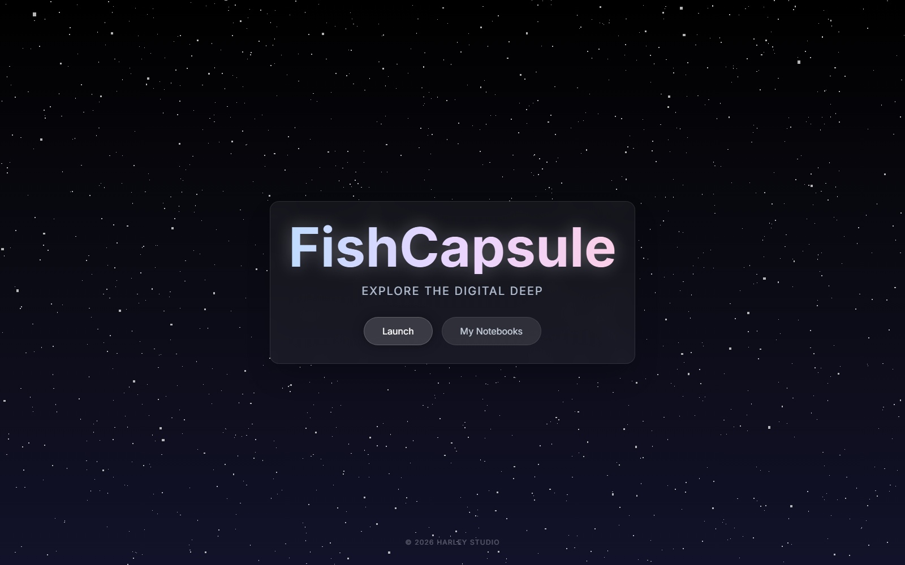
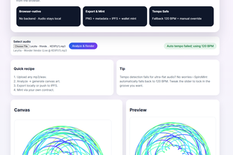

6.18M+
rows analyzed in enterprise product usage data
Hakuji / White Porcelain / Los Angeles to Philadelphia
I build AI-native products where reliability, taste, and real user experience have to coexist. Statistics at UCLA. Systems Engineering next at Penn. Researching music-driven generative art in between.
6.18M+
rows analyzed in enterprise product usage data
70%
reduction in invalid structured LLM outputs
99%
citation coverage in slide-grounded study workflows
#3 / 113
AI Best Coast 2025, plus blockchain and fintech wins
About
I am finishing a B.S. in Statistics and Data Science at UCLA, then moving to the University of Pennsylvania for an MSE in Systems Engineering. The throughline in my work is not just AI capability. It is controlled capability.
I care about products that can survive real use: grounded retrieval, strong schemas, measurable failure reduction, and interfaces that do not make users negotiate with the model. That is the standard behind projects like FishCapsule.
Outside product systems, I build music-driven generative art. Audio becomes geometry, geometry becomes motion, and the result stays reproducible. That mix of rigor and expression is the part I keep chasing.
Projects
Live system study
Audio features become deterministic geometry through multi-rotor spirograph motion. This demo keeps the same idea as the real project: parameters map cleanly, the motion is reproducible, and the aesthetic output is not hand-waved.

Product / AI study tools
A self-study platform built around source-grounded workflows, schema-first LLM calls, caching, and automated JSON repair. It is designed for depth instead of distraction.

Research / computational media
Undergraduate research with Prof. Jiayin Lu translating beats, RMS, and spectral signals into reproducible visual systems using Python, PIL, and FFmpeg.
Enterprise analytics
Analyzed 6.18M+ usage logs and 14,624 user records, surfaced underused licenses, and built reporting automation that cut manual effort by 38+ hours each month.
Machine learning
End-to-end modeling on 50K dermatology rows with aligned preprocessing, feature screening, and model comparison across logistic regression, random forest, and XGBoost.
Timeline
Short read
The pattern is consistent: quantify what matters, reduce ambiguity, and build interfaces that make the system legible. That has shown up in enterprise analytics, study tooling, and generative media.
B.S. in Statistics and Data Science, with a minor in Data Science Engineering.
Built analytics workflows from millions of usage records with measurable savings.
Developed reproducible audio-conditioned visual systems with UCLA Math-Code-Art.
3rd place overall, plus blockchain and fintech category awards.
Presented as a grounded AI learning platform with strong citation behavior.
Next step: systems engineering with deeper product and infrastructure rigor.
Contact
I am interested in internships, research collaborations, and product conversations around AI systems, human-centered tooling, and computational media.